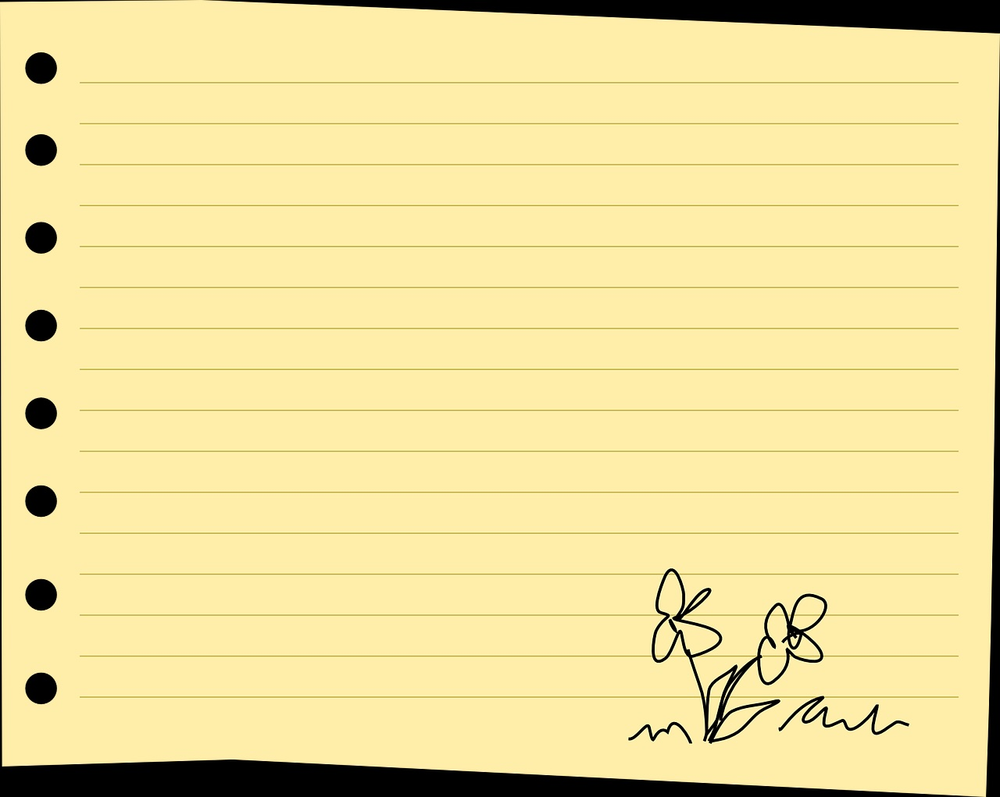
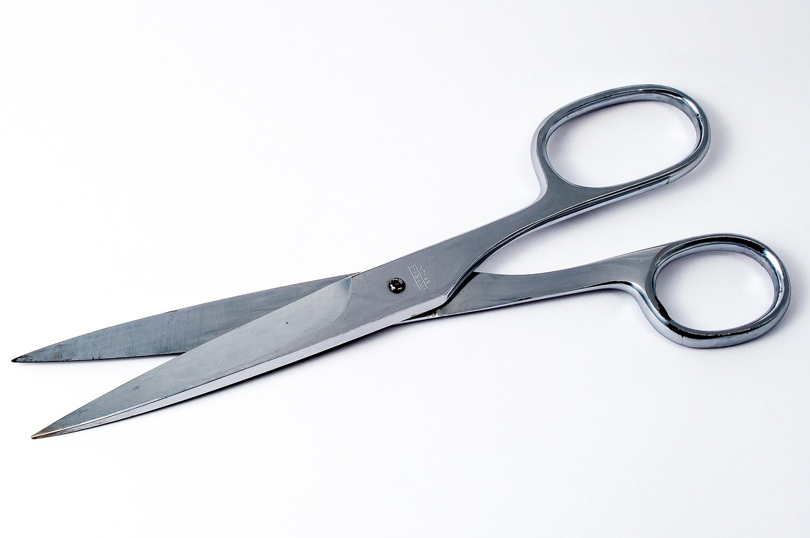
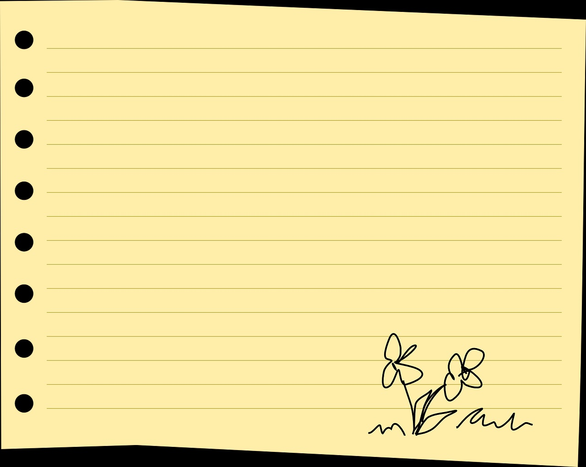
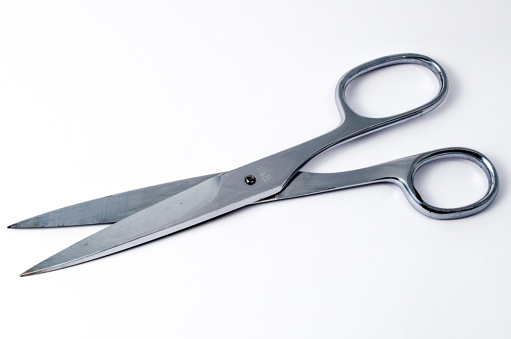

˗ˏˋ ★ ˎˊ˗ ROCK, PAPER, SCISSORS˗ˏˋ ★ ˎˊ˗
Challenge
Our challenges was to start planning on the things we wanted to see in our plan list. We created a google doc as a rough outline then focus on how to add it on to the javascript. .
Problems
Not much problem has shown in our code but we mostly focus on what to add. We created out pages and some issues were due to tiny mistake symbols.
Reflection
Overall, the project itself seemed nice to work on. Everytihing was well listed and having to view each other works helped as well.
Results
User input (Rock, Paper, Scissors)
// ✄ Computer chooses moves
//Random
// ✄ Countdown
//1, 2, 3
// ✄ Winner vs Loser
//Win
//Rock beats Scissors
//Scissors beats Paper
//Paper beats Rock
//Lose
// Scissors vs paper
// paper vs rocks
// ✄ no points
// if both players pick the same things
//Add up points
//Best of 3 games
//End after 3 games
//Output winner signs with lighting animation efffect
  
 